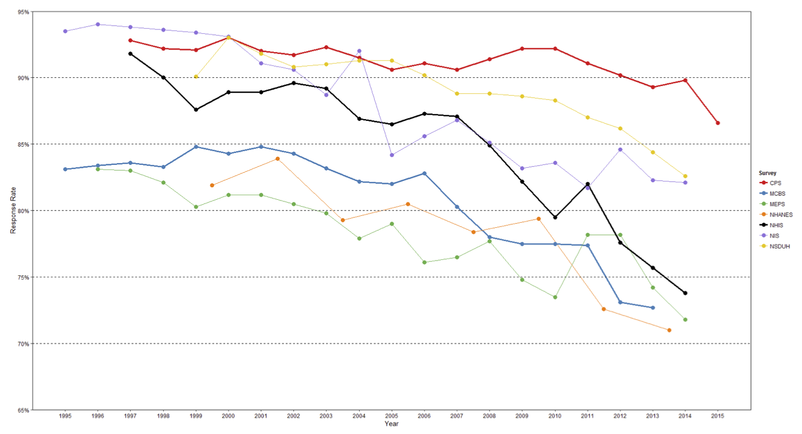
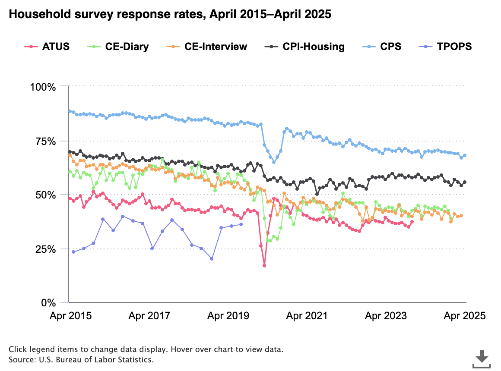
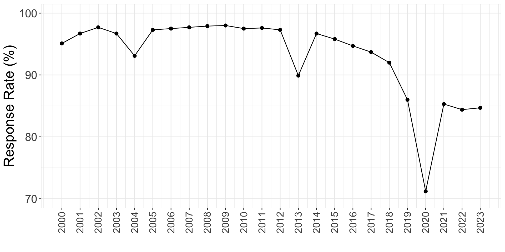
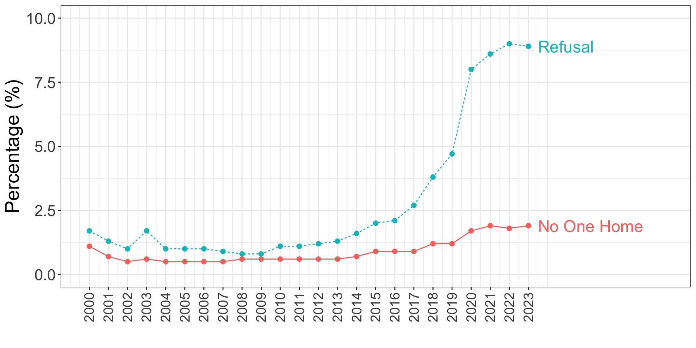

Nonresponse: Intro to Missing Data
PUBHBIO 7225 Lecture 17
Outline
Topics
Missing Data
Nonresponse Bias
Preventing Nonresponse
Unit and Item Nonresponse
Taxonomy of Missing Data
Activities
- 17.1 The Impact of Missing Data
Readings
- Andridge RR and Lemeshow S (2017). Nonresponse in Sample Surveys, In Wiley StatsRef: Statistics Reference Online (PDF on Carmen)
Assignments
- Peer Evaluation of Problem Set 4 due Tuesday 10/28/25 11:59pm via Carmen
- Quiz 4 due Thursday 10/30/2025 11:59pm via Carmen
The Problem of Nonresponse
To this point we have assumed every sampled unit responded to the survey
When we sample “things” that aren’t people, this might be reality
E.g., sampling to determine percentage of beds using netting in rural Gambia
Presumably the surveyors were able to (correctly) count beds and beds with netting for all sampled compounds (within villages, within districts)
But, when sampling people there is usually (always?) some fraction of the sample that fails to respond
Two main problems caused by nonresponse:
Reduction in power / loss of efficiency
Potential for bias
For surveys, in general bias is the major concern
Total Survey Error Diagram
Nonresponse is only one part of the TSE framework…
![A flowchart diagram of the Total Survey Error (TSE) framework. The diagram is split into two main vertical columns, "Measurement" on the left and "Representation" on the right. In the Measurement column, the flow goes from "Construct" to "Measurement" to "Response" to "Edited Data." Red arrows pointing to the right of each step label the sources of error: "Specification Error (Validity)" for the first step, "Measurement Error" for the second, and "Processing Error" for the third. The Representation column flows from "Target Population" to "Sampling Frame" to "Sample" to "Respondents" to "Postsurvey Adjustments." Similarly, red arrows label the errors at each step: "Coverage Error," "Sampling Error," "Nonresponse Error," and "Adjustment Error." Both columns converge at the bottom, with arrows from "Edited Data" and "Postsurvey Adjustments" pointing to a final box labeled "Survey Statistic."](figures/TSEdiagram.png)
Adapted from Groves et al. (2009), Survey Methodology, 2nd Edition
…but it is arguably the biggest source of error, or at least one of the biggest
How Nonresponse Causes Bias
- Imagine that the target population can be partitioned into two groups: respondents and nonrespondents
| Group | Population Size | Population Mean | Population Variance |
|---|---|---|---|
| Respondents | \(N_R\) | \(\bar{y}_{RU}\) | \(S^2_R\) |
| Non-Respondents | \(N_{NR}\) | \(\bar{y}_{NRU}\) | \(S^2_{NR}\) |
| Total | \(N\) | \(\bar{y}_U\) | \(S^2\) |
- The overall population mean is a weighted average of the two group means: \[\bar{y}_U = \frac{N_R}{N} \bar{y}_{RU} + \frac{N_{NR}}{N} \bar{y}_{NRU}\]
Now suppose we take an SRS of size \(n\) (from the full population of \(N\) units), and \(n_R\) units respond
Respondents are (by definition) all from the “Respondents” group
Nonrespondents are from the “Nonrespondents” group
How Nonresponse Causes Bias (con’t)
| Group | Population Size | Population Mean | Population Variance |
|---|---|---|---|
| Respondents | \(N_R\) | \(\bar{y}_{RU}\) | \(S^2_R\) |
| Non-Respondents | \(N_{NR}\) | \(\bar{y}_{NRU}\) | \(S^2_{NR}\) |
| Total | \(N\) | \(\bar{y}_U\) | \(S^2\) |
Sample size: \(n\)
Number of respondents: \(n_R\)
Sample mean based on respondents only: \(\bar{y}_R\)
\(E[\bar{y}_R] = \bar{y}_{RU}\)
- Respondent sample mean is an unbiased estimate of the respondent mean
\(E[\bar{y}_R] \ne \bar{y}_U\)
- Respondent sample mean is not an unbiased estimate of the overall mean
- …unless the mean is the same for respondents and nonrespondents (i.e., unless \(\bar{y}_{RU} = \bar{y}_{NRU} = \bar{y}_U\))
How Nonresponse Causes Bias (con’t)
The bias of the respondent mean is: \[\begin{aligned} \text{Bias}(\bar{y}_R) &= E(\bar{y}_R) - \bar{y}_U\\ &= \bar{y}_{RU} - \left[ \frac{N_R}{N} \bar{y}_{RU} + \frac{N_{NR}}{N} \bar{y}_{NRU} \right] = \textcolor{red}{\frac{N_{NR}}{N}} \textcolor{blue}{(\bar{y}_{RU} - \bar{y}_{NRU})} \end{aligned}\]
Bias in the respondent mean depends on nonresponse rate and difference between respondents and nonrespondents
We cannot ever actually know this bias – we don’t observe the nonrespondents (can’t estimate \(\bar{y}_{NRU}\))
But this expression tells us that nonresponse bias is small if:
Nonresponse rate is small (\(\frac{N_{NR}}{N}\) close to 0)
orMean for nonrespondents is close to the mean for the respondents \((\bar{y}_{NRU} \approx \bar{y}_{RU})\)
We can’t ever know if (2) is true, so our best bet is to try to achieve (1)
How Nonresponse Causes Bias (con’t)
Some additional comments:
- Increasing sample size does not help – doesn’t guarantee \(\bar{y}_{NRU} \approx \bar{y}_{RU}\)
- Might just get “more of the same”
- Bias can (and will) differ for different survey items (i.e., for different \(y\))
- Increasing sample size does not help – doesn’t guarantee \(\bar{y}_{NRU} \approx \bar{y}_{RU}\)
Best strategy is to try to avoid nonresponse altogether!
Key idea: If an outcome, \(y\), is “related” to nonresponse – i.e., it differs between respondents and nonrespondents – then an estimate based on respondents only will be biased (without additional adjustment)
- Essentially, if there is nonresponse, the best-case scenario is that the respondents are a random sample of the full sample.
Activity 17.1 (Part 1)
The Impact of Missing Data (Part 1)
Nonresponse a Growing Problem
Response rates steadily declining for large Federally-sponsored surveys1
For seven major surveys, 1995 to 2015 (Y-axis is 65% to 95%):

Nonresponse a Growing Problem (con’t)
- Recent response rates (2015-2025) for Bureau of Labor Statistics household surveys (chart source)

- Note the COVID dip!
Nonresponse a Growing Problem (con’t)
ACS (American Community Survey) = primary source of information about U.S. demographics and housing
Recent response rates for ACS (2000-2023) (chart data source)

RR declined 12.8 percentage points between 2010 and 2023
Again, note the COVID dip!
Note: ACS estimates are often used as the “truth” for post-survey adjustments (e.g., post-stratification) for other surveys
What Are Some Factors That Could Be Causing This?
And What Can Be Done To Mitigate/Prevent It?
A Particular Growing Problem
- Looking at the ACS reasons for nonresponse shows that refusal is a growing problem

Designing Surveys to Minimize Nonresponse
Many “design” considerations to maximize response rates:
Survey mode selection – some modes generally provide higher response rates; sensitive topics may provide better response with self-administered modes
Time survey is administered – some calling periods or seasons of the year may yield higher response rates (e.g., avoid holidays)
Good interviewer training – persistence, gentle conversion of reluctant persons to respondents, etc.
Careful “physical” design of mail and web surveys – “official” logos, ensure mail doesn’t look like junk mail/SPAM
Carefully designed questionnaire – poorly worded questions can lead to skipped questions, easy-to-navigate paper survey if mailed
Low respondent burden – try to make the survey short and “easy” to take, possibly using split-questionnaire design (not all sampled units get all questions)
Use of incentives – given either before completion (“pre-incentive”) or upon completion (“post-incentive” or “reward”)
Extensive follow-up – Might not get response on the first try, might consider alternate modes for follow-up (e.g., telephone follow-up to mailed survey)
Responsive Design – Adjust data collection process while it is ongoing, e.g., by reallocating effort to subgroups with higher non-contact or non-response
Two Types of Nonresponse in Surveys
Unit nonresponse = a sampled unit completely fails to respond (to entire survey)
Item nonresponse = a sampled unit responds but fails to answer to a specific item
In general, we:
Deal with unit nonresponse by making adjustments to the base survey weights
Deal with item nonresponse with imputation (or, by ignoring it…)
For large-scale surveys, unit nonresponse is arguably the more severe problem
(declining response rates…)Before we talk about how to handle the missing data, we need to talk about different types of missing data
Taxonomy of Missing Data
We classify missing data based on the underlying reason the data are missing
In general, not testable – just an assumption
Three types of missing data:
MCAR: Missing Completely At Random 😀
MAR: Missing At Random 😐
MNAR: Missing Not At Random 😱
Defined by what factors are associated with the probability of missingness (or conversely, with the probability of response)
Notation
\(y_i\) = survey outcome of interest for unit \(i\), only observed for respondents
\(\mathbf{x}_i\) = vector of information known about unit \(i\), observed for ALL sampled units
- E.g., design information (stratum, cluster membership), or data available on the sampling frame
\(R_i\) = response indictor for unit \(i\) (=1 for respondents, =0 for nonrespondents)
\(\phi_i= P(R_i=1)\) = probability unit \(i\) responds = response propensity (unknown)
And we also have:
\(Z_i\) = selection indicator (=1 for sampled units, =0 for non-sampled units)
\(\pi_i = P(Z_i=1)\) = selection probability (known!)
MCAR: Missing Completely At Random
MCAR = Best-case scenario: \(P(R_i=1 | y_i, \mathbf{x}_i) = P(R_i=1)\)
Probability a variable has missing values does not depend on any factors/variables (including itself)
Examples:
- Coin flip to determine if respond
- Computer glitch that wipes out 10% of records
No systematic difference between respondents and nonrespondents
Respondents are indistinguishable from nonrespondents]
\(\bar{y}_{RU} = \bar{y}_{NRU}\) → \(\text{Bias}(\bar{y}_R) = \frac{N_{NR}}{N} (\bar{y}_{RU} - \bar{y}_{NRU}) = \frac{N_{NR}}{N} \times 0 = 0\)
A complete case analysis implicitly makes this assumption!
Estimates of survey totals will be biased (literally not counting up enough people!)
Estimates of quantities like means or proportions will be unbiased
Standard errors will be larger than if no nonresponse
MAR: Missing At Random
MAR = Next-best-case scenario: \(P(R_i=1 | y_i, \mathbf{x}_i) = P(R_i=1|\mathbf{x}_i)\)
Probability a variable has missing values depends on observed data
Examples:
Older adults more likely to respond than younger adults – and we observe all sampled units’ ages (i.e., it’s on the sampling frame)
Unmarried moms less likely to respond than married moms – and we have marital status on the sampling frame
People in one stratum are less likely to respond than in another stratum
Nonrespondents are different from respondents, but we can see how they are different
- Since we observe how the respondents and nonrespondents differ, we can adjust for it
Estimates for a \(y\) that is related to the variable(s) that differ between respondents and nonrespondents will be biased
But, we can adjust survey weights to “make-up” the difference and remove bias (coming next lecture!)
Example: MAR
SRS of women who recently gave birth in Ohio
Outcome of interest: Postpartum feelings of social isolation
Nonresponse Problem: All married moms respond, but only 50% of unmarried moms respond
If married women are less likely to experience social isolation than unmarried women, our estimate of the prevalence of social isolation will be __________ (too low? too high?)
Suppose you sampled 100 married moms and 100 non-married moms.
In truth, 25% of the married moms feel isolated, and 50% of the non-married moms feel isolated:
| TRUTH | Isolated | Not Isolated | Total |
|---|---|---|---|
| Married | 25 | 75 | 100 |
| Not Married | 50 | 50 | 100 |
But only half the non-married moms respond (assume nonresponse unrelated to isolation status):
| WITH NONRESPONSE | Isolated | Not Isolated | Total |
|---|---|---|---|
| Married | |||
| Not Married |
- What is the prevalence of isolation if the full sample had responded?
- With nonresponse?
Example: MAR (con’t)
| WITH NONRESPONSE | Isolated | Not Isolated | Total |
|---|---|---|---|
| Married | 25 | 75 | 100 |
| Not Married | 25 | 25 | 50 |
- Observed prevalence of isolation = 0.333 = 33.3%
- True prevalence = 0.375 = 37.5%
To “adjust” for this MAR mechanism, we can upweight the non-married moms
Essentially, we want to make the responding sample look like the full sample with respect to marital status
- Only half the unmarried moms responded (50 out of 100)
- Make each responding unmarried mom “represent” 2 unmarried moms
- Thus we double the weights of the unmarried moms to “adjust” for the nonresponse
- Estimated prevalence is:
Note: this assumes that marital status is on the sampling frame – so that we know it for all sampled women – so we know whose weights to double!
MNAR: Missing Not At Random (sometimes NMAR)
MNAR = Worst-case scenario: \(P(R_i=1 | y_i, \mathbf{x}_i) = P(R_i=1|y_i, \mathbf{x}_i)\)
Probability a variable has missing values depends on values of unobserved data
Examples:
Depressed moms less likely to respond than non-depressed moms, but we don’t know depression status unless they respond
Higher income earners less likely to report their income than low wage earners, but this information isn’t on the sampling frame
Nonrespondents are different from respondents, and we do not observe the characteristic(s) that make them different
Can never know if we have MNAR (not possible to test for it)
Inference under MNAR generally requires us to posit a model for the response mechanism where response depends on unobserved variables (like a survey outcome, \(y\)), which we can never confirm is correct
Usually we assume MAR, and (sometimes) assess how wrong our conclusions would be if the truth were MNAR – called a sensitivity analysis
Activity 17.1 (Part 2)
The Impact of Missing Data (Part 2)
PUBHBIO 7225